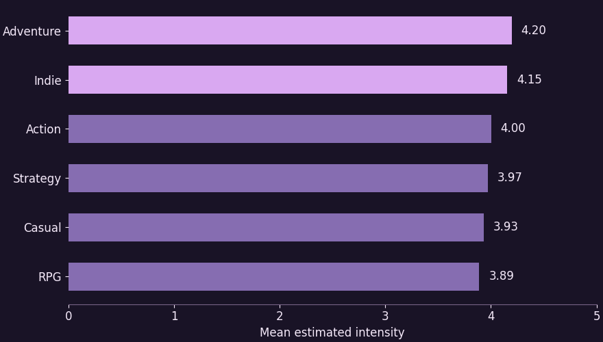
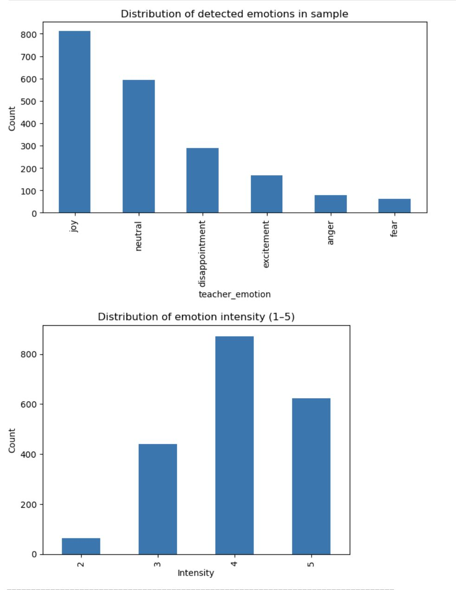

Natural language processing · Team of four
Emotion in Steam game reviews
My team wanted to know whether players express different kinds of emotion across game genres. A positive or negative sentiment label can miss distinctions that matter here. A player can be frustrated by a difficult boss fight and still recommend the game. We worked with a corpus of more than 500,000 Steam reviews and used a smaller labeled sample to study how an emotion classifier handled excitement, frustration, disappointment, and other categories.
I led a team of four and helped build a teacher–student pipeline. We used DistilRoBERTa as the teacher and a linear support vector classifier with TF–IDF features as the student. The student gave us a practical way to run classification at scale and inspect which words contributed to its predictions. We used bootstrap inference to examine the genre averages and log odds to identify words that appeared disproportionately often in each genre.
Adventure and Indie had the highest mean teacher-estimated intensity among the six genres we studied. Reviewing classification errors helped us see where overlapping genre labels, sparse emotion categories, and genre-specific vocabulary could shape the results. The chart summarizes the model’s scores. A later study could use independent human ratings to test how closely those scores track perceived emotional intensity.


